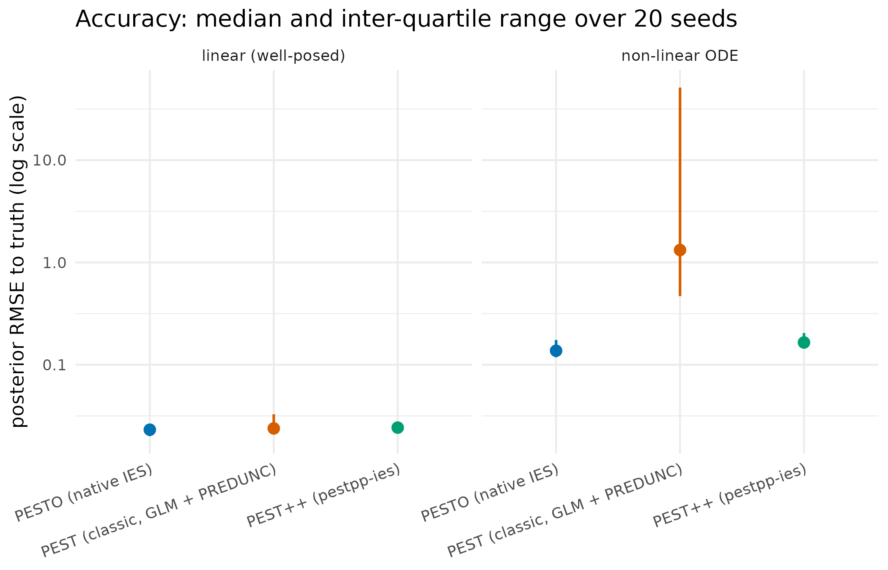
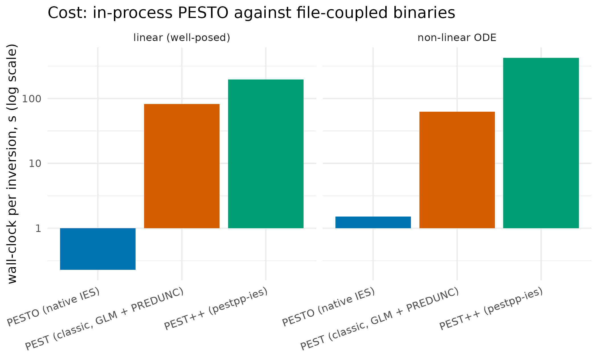
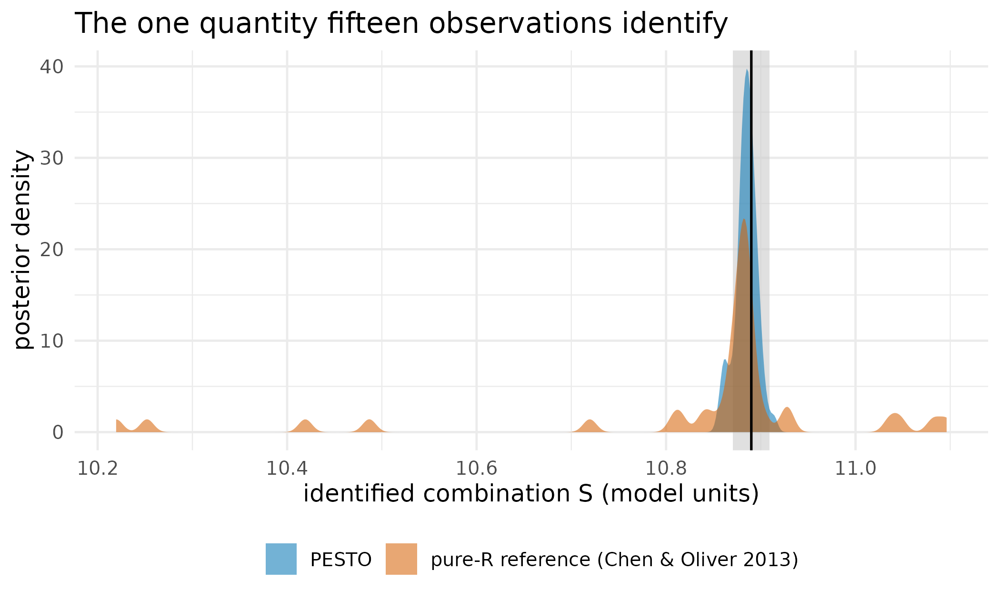
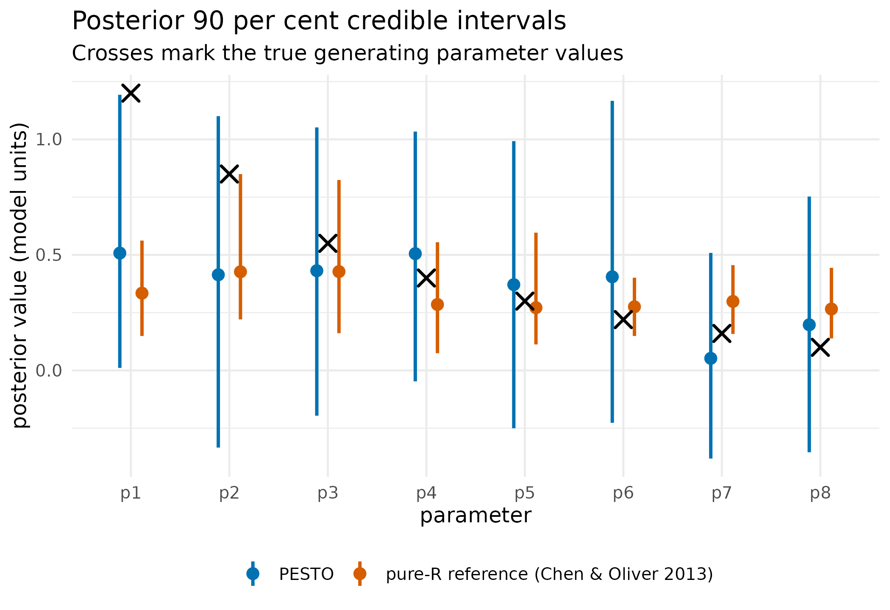

Is PESTO the same algorithm as the tools it descends from?
Source:vignettes/pestpp-comparison-and-simulation.Rmd
pestpp-comparison-and-simulation.Rmd
library(PESTO)
# Colourblind-safe palette throughout (Wong 2011).
PAL <- c("#0072B2", "#D55E00", "#009E73", "#CC79A7", "#F0E442",
"#56B4E9", "#E69F00", "#000000")Why
I already have a PEST workflow that works, and switching an established calibration to a new tool is a risk I need a reason to take. Before I move, the question I want answered is: is PESTO’s smoother actually the same algorithm as the one I am running now, does it get the same answers, and what does going native in R cost or buy me? This vignette answers it in three parts: a lineage table saying which tool implements which estimator, a frozen head-to-head benchmark of PESTO against classic PEST and PEST++ on identical inverse problems, and a live worked example in which PESTO’s smoother is compared against an independent reference implementation of the same update.
What
Three tools stand in a direct line, and a fair comparison has to respect that they do not all implement the same estimator.
PEST (Doherty 2015) is the original Fortran framework. Its estimator is deterministic Gauss-Levenberg-Marquardt with Tikhonov and singular-value-decomposition-assisted regularisation, and its uncertainty quantification is a linearised Bayesian posterior, the PREDUNC path.
PEST++ (White et al. 2020) is the open-source C++
re-implementation. It adds pestpp-ies, an iterative
ensemble smoother after Chen and Oliver (2013), which classic PEST does
not provide.
PESTO brings that smoother family natively into R
through pesto_ies_callback(),
and adds surrogate acceleration, multi-fidelity, inflation and
localisation, and an in-process forward-model callback. pesto_ies() drives the
external pestpp-ies binary when one is wanted, and pestpp_available()
probes for it without erroring. create_pest_scenario(),
write_pst() and read_pst() build and
round-trip a PEST control file from R, so a problem defined in R is
readable by the wider PEST toolchain. pesto_reference_ies()
is a compact pure-R implementation of the same smoother update, shipped
as the comparison target the worked example uses.
| Algorithm class | classic PEST | PEST++ | PESTO |
|---|---|---|---|
| Deterministic GLM with linearised UQ | yes (pest) |
yes (pestpp-glm) |
no |
| Iterative ensemble smoother | no | yes (pestpp-ies) |
yes (native) |
So PESTO’s smoother is benchmarked against pestpp-ies,
its algorithmic twin, while classic PEST enters as the deterministic
reference. Reading a deterministic optimum against an ensemble posterior
is legitimate on a well-posed problem, where the linearisation holds,
and instructive on a non-linear one, where it does not. Both cases
appear below.
Every PESTO algorithm runs with no external dependency. The optional cross-checks against the upstream binaries are guarded.
pestpp_available("pestpp-ies")
#> [1] FALSE
pesto_version()$pestpp_version
#> [1] "not found"No pestpp-ies binary is installed on this machine, so
nothing here shells out to one: the benchmark is read from a frozen
artefact and the worked example runs entirely in R.
Do
The cross-tool benchmark
This is the head-to-head picture: a fixed-seed Monte Carlo study, twenty seeds per cell, run by a standalone reproducibility harness that drives classic PEST, PEST++ and PESTO through identical inverse problems and scores them on the same footing. The numbers are frozen real outputs shipped with the package and read here; they are not recomputed at build time, because the external binaries are absent from package check farms.
mt_path <- system.file("extdata", "pestpp_cache",
"multitool_benchmark_summary.rds", package = "PESTO")
if (!nzchar(mt_path)) {
mt_path <- file.path("..", "inst", "extdata", "pestpp_cache",
"multitool_benchmark_summary.rds")
}
mt <- readRDS(mt_path)
mt_sum <- data.table::as.data.table(mt$summary)| Tool | Version |
|---|---|
| PESTO | 0.8.0.9000 |
| PEST (classic) | 18.25 |
| PEST++ (pestpp-ies) | 5.2.16 |
| Problem | Regime | Parameters | Observations |
|---|---|---|---|
| linear_p20_n50 | linear, well-posed | 20 | 50 |
| logistic_exp_p10_n30 | non-linear ODE | 10 | 30 |
primary <- mt_sum[tool %in% c("pesto_callback", "pest_predunc",
"pestpp_ies")]
primary[, problem := ifelse(tier == "tier1",
"linear (well-posed)", "non-linear ODE")]
m_order <- c("PESTO (native IES)", "PEST (classic, GLM + PREDUNC)",
"PEST++ (pestpp-ies)")
primary[, method := factor(method, levels = m_order)]
data.table::setorder(primary, tier, method)
tab_primary <- primary[, .(
Problem = problem,
Method = method,
`RMSE (median)` = round(rmse_med, 4),
`CI90 coverage` = round(ci90_cov, 3),
`Wall-clock (s)` = round(wallclock_s, 2),
`Forward evals` = round(fwd_evals)
)]| Problem | Method | RMSE (median) | CI90 coverage | Wall-clock (s) | Forward evals |
|---|---|---|---|---|---|
| linear (well-posed) | PESTO (native IES) | 0.0232 | 0.128 | 0.23 | 550 |
| linear (well-posed) | PEST (classic, GLM + PREDUNC) | 0.0239 | 0.805 | 82.10 | 378 |
| linear (well-posed) | PEST++ (pestpp-ies) | 0.0243 | 0.218 | 197.32 | 950 |
| non-linear ODE | PESTO (native IES) | 0.1371 | 0.540 | 1.51 | 1050 |
| non-linear ODE | PEST (classic, GLM + PREDUNC) | 1.3230 | 0.970 | 62.93 | 262 |
| non-linear ODE | PEST++ (pestpp-ies) | 0.1651 | 0.395 | 421.90 | 1850 |
wide <- data.table::dcast(primary, problem ~ tool, value.var = "wallclock_s")
tab_speed <- data.table::data.table(
Problem = wide$problem,
`PESTO vs classic PEST` = round(wide$pest_predunc / wide$pesto_callback),
`PESTO vs PEST++` = round(wide$pestpp_ies / wide$pesto_callback)
)| Problem | PESTO vs classic PEST | PESTO vs PEST++ |
|---|---|---|
| linear (well-posed) | 359 | 862 |
| non-linear ODE | 42 | 280 |
ggplot2::ggplot(primary, ggplot2::aes(method, rmse_med, colour = method)) +
ggplot2::geom_pointrange(
ggplot2::aes(ymin = rmse_iqr_lo, ymax = rmse_iqr_hi), linewidth = 0.7
) +
ggplot2::facet_wrap(~ problem) +
ggplot2::scale_y_log10() +
ggplot2::scale_colour_manual(values = stats::setNames(
c(PAL[1], PAL[2], PAL[3]), m_order
)) +
ggplot2::labs(
x = NULL, y = "posterior RMSE to truth (log scale)",
title = "Accuracy: median and inter-quartile range over 20 seeds"
) +
ggplot2::theme_minimal(base_size = 11) +
ggplot2::theme(legend.position = "none",
axis.text.x = ggplot2::element_text(angle = 20, hjust = 1))
Median posterior error to the known truth, with inter-quartile bars, on a logarithmic axis. On the linear problem the three methods sit together; on the non-linear ODE the two ensemble methods stay close while the linearised deterministic posterior degrades by an order of magnitude with a long upper whisker across seeds.
ggplot2::ggplot(primary, ggplot2::aes(method, wallclock_s, fill = method)) +
ggplot2::geom_col() +
ggplot2::facet_wrap(~ problem) +
ggplot2::scale_y_log10() +
ggplot2::scale_fill_manual(values = stats::setNames(
c(PAL[1], PAL[2], PAL[3]), m_order
)) +
ggplot2::labs(
x = NULL, y = "wall-clock per inversion, s (log scale)",
title = "Cost: in-process PESTO against file-coupled binaries"
) +
ggplot2::theme_minimal(base_size = 11) +
ggplot2::theme(legend.position = "none",
axis.text.x = ggplot2::element_text(angle = 20, hjust = 1))
Median wall-clock seconds per inversion on a logarithmic axis. PESTO’s in-process driver sits below one second on the linear problem and near one second on the ODE; the file-coupled binaries sit in the tens to hundreds of seconds. The gap is two to three orders of magnitude and is an exchange cost, not an algorithmic one.
Does PESTO drive the binary faithfully?
The benchmark above compares algorithms. A separate question is
whether PESTO, used as a driver for pestpp-ies
through pesto_ies(), reproduces what invoking the binary
directly would give. The conformance arm of the PEST, PEST++ and PESTO
benchmark harness answered that on 2026-07-16, running the same problem,
the same prior ensemble and the same options twice, once through the
harness calling the binary itself and once through PESTO, and comparing
the posterior ensembles element by element: the two agreed to the last
bit, with a maximum absolute difference of zero. That record is cited
here, not recomputed: reproducing it needs the external
pestpp-ies binary, which no package build can assume.
Where the cost model comes from
PESTO’s performance rests on four levers, each with a cost model and a measured outcome.
Speed at matched accuracy. The speed-up is S = t_{\text{ref}} / t_{\text{PESTO}}, median wall-clock per inversion, which the table above reports. It follows from a cost model rather than from fewer solves. A smoother with N realisations over T iterations performs about N(T{+}1) forward solves; a file-coupled engine pays, per solve, the model cost c_m plus an exchange overhead c_{io} for the template write, the output parse and the process spawn, while the in-process callback pays c_m alone: t_{\text{file}} \approx N(T{+}1)\,(c_m + c_{io}), \qquad t_{\text{PESTO}} \approx N(T{+}1)\,c_m + c_{\text{upd}} . When the exchange dominates, which is the cheap-model regime of this benchmark, the speed-up approaches 1 + c_{io} / c_m: the same number of solves at far lower per-solve overhead, with a C++ update kernel. The accuracy column and Can PESTO recover APSIM’s own parameters?, which recovers a known truth and brackets an independent optimiser on real data, are what say the accuracy is not paid away for it.
Evaluation economy. When the forward model itself is expensive, cost shifts to the number of expensive solves. A Gaussian-process surrogate (Rasmussen and Williams 2006) predicts the confident realisations and sends only the uncertain ones to the full model, \text{saving} = 1 - \frac{n_{\text{model}}}{n_{\text{total}}}, a realisation taking the full model only when its predictive standard deviation exceeds a threshold. The saving is regime-dependent and the current release computes it as a projection rather than realising it, which When can a surrogate stand in for the simulator? sets out in full.
Cost-accuracy trade. With a cheap and an expensive
fidelity correlated at \rho, the
control-variate combiner mf_control_variate()
(Kennedy and O’Hagan 2000; Glasserman 2003) attains \mathrm{Var}(\hat\mu_{\text{CV}}) =
(1-\rho^2)\,\mathrm{Var}(\hat\mu_{\text{H}}), so a
well-correlated cheap model cuts the expensive-evaluation budget for a
target variance by about (1-\rho^2).
Iteration economy. With \phi(\theta) = \sum_i w_i (d_i -
g_i(\theta))^2 the weighted objective, the optional
phi_tol stops once the relative reduction (\phi_{k-1}-\phi_k)/\phi_{k-1} falls below a
tolerance, spending no iterations on a plateau.
These are gains in wall-clock time and evaluation budget, not in the number of base solves, and not in raw-interval calibration.
A worked example that runs here
The benchmark above used frozen binary outputs. This example runs end to end at build time with no external dependency, and compares PESTO’s native smoother against the shipped pure-R reference implementation of the same update.
The problem is synthetic: a one-dimensional exponential-decay response with eight unknown parameters and fifteen observations,
y_i \;=\; \sum_{k=1}^{8} k\,\theta_k \, e^{-i / 10}\;+\;\varepsilon_i, \qquad i = 1, \ldots, 15, \quad \varepsilon_i \sim \mathcal{N}(0, \sigma^2).
The response is linear in \boldsymbol{\theta}, so the posterior is analytically tractable, and it is worth noticing what the design actually identifies: every observation is the same weighted sum S = \sum_k k\,\theta_k scaled by e^{-i/10}, so the design matrix has rank one. Fifteen observations therefore pin down one number, and no individual parameter, which is what makes this a searching test of two implementations rather than an easy one.
set.seed(20260425L)
n_par <- 8L
par_names_A <- sprintf("p%d", seq_len(n_par))
theta_true_A <- c(1.20, 0.85, 0.55, 0.40, 0.30, 0.22, 0.16, 0.10)
forward_A <- function(p) {
vapply(seq_len(15L),
function(ii) sum(seq_along(p) * p * exp(-ii / 10.0)), numeric(1L))
}
y_true_A <- forward_A(theta_true_A)
obs_noise_sd_A <- 0.02
y_obs_A <- y_true_A + rnorm(length(y_true_A), sd = obs_noise_sd_A)
weights_A <- rep(1 / obs_noise_sd_A, length(y_obs_A))PESTO defines problems programmatically, with no pre-existing control file needed, and round-trips them through the PEST control-file format, so a problem built in R is readable by the wider PEST toolchain:
parameters_A <- data.table::data.table(
parnme = par_names_A, partrans = "log", parchglim = "factor",
parval1 = 0.5, parlbnd = 0.001, parubnd = 5.0, pargp = "pgrp"
)
observations_A <- data.table::data.table(
obsnme = sprintf("obs_%02d", seq_len(15L)),
obsval = y_obs_A, weight = weights_A, obgnme = "obs_g"
)
pst_A <- create_pest_scenario(
parameters = parameters_A, observations = observations_A,
model_command = "python3 forward.py",
pestpp_options = list(ies_num_reals = 60L)
)
scratch_A <- file.path(tempdir(), "pesto_scenA")
dir.create(scratch_A, showWarnings = FALSE, recursive = TRUE)
write_pst(pst_A, file.path(scratch_A, "scenA.pst"))
pst_A_rt <- read_pst(file.path(scratch_A, "scenA.pst")) # round-trip check
c(parameters_written = pst_A_rt$control_data$npar,
observations_written = pst_A_rt$control_data$nobs)
#> parameters_written observations_written
#> 8 15The in-process callback driver is the recommended path for an R forward model: it keeps the C++ ensemble kernel but drives the outer loop in R, calling the forward model directly. The contract is the subject of Wiring your own simulator into PESTO.
set.seed(20260425L)
n_real_A <- 60L
prior_A <- matrix(rnorm(n_real_A * n_par, mean = 0.5, sd = 0.4),
nrow = n_real_A, ncol = n_par,
dimnames = list(NULL, par_names_A))
forward_ens_A <- function(theta) t(apply(theta, 1L, forward_A))
t0 <- proc.time()[["elapsed"]]
fit_A <- pesto_ies_callback(
forward_model = forward_ens_A,
prior_ensemble = prior_A,
obs = setNames(y_obs_A, sprintf("obs_%02d", seq_len(15L))),
obs_sd = obs_noise_sd_A,
noptmax = 6L,
seed = 20260425L,
verbose = FALSE
)
runtime_pesto_A <- proc.time()[["elapsed"]] - t0
post_A <- as.matrix(fit_A$par_ensemble[, -1L])[, par_names_A]
post_mean_pesto <- colMeans(post_A)
post_q05_pesto <- apply(post_A, 2L, quantile, 0.05)
post_q95_pesto <- apply(post_A, 2L, quantile, 0.95)
rmse_pesto_A <- sqrt(mean((post_mean_pesto - theta_true_A)^2))
round(c(seconds = runtime_pesto_A, posterior_rmse = rmse_pesto_A), 4)
#> seconds posterior_rmse
#> 0.0420 0.3072The package ships a compact pure-R reference produced by
pesto_reference_ies(), an independent implementation of the
Chen and Oliver update on the same problem. It is the comparison target
every reader sees by default.
cache_path <- system.file("extdata", "pestpp_cache",
"scenario_a_reference.rds", package = "PESTO")
if (!nzchar(cache_path)) {
src_guess <- file.path("..", "inst", "extdata", "pestpp_cache",
"scenario_a_reference.rds")
if (file.exists(src_guess)) cache_path <- normalizePath(src_guess)
}
stopifnot(nzchar(cache_path), file.exists(cache_path))
ies_cache <- readRDS(cache_path)
# Same problem instance: the cached reference must have seen these data.
max(abs(ies_cache$y_obs - y_obs_A)) < 1e-10
#> [1] TRUE
posterior_ref_A <- as.matrix(
ies_cache$posterior_par[, ies_cache$par_names, with = FALSE]
)
post_mean_ref <- colMeans(posterior_ref_A)
post_q05_ref <- apply(posterior_ref_A, 2L, quantile, 0.05)
post_q95_ref <- apply(posterior_ref_A, 2L, quantile, 0.95)
rmse_ref_A <- sqrt(mean((post_mean_ref - theta_true_A)^2))
ref_label <- "pure-R reference (Chen & Oliver 2013)"
round(c(reference_posterior_rmse = rmse_ref_A), 4)
#> reference_posterior_rmse
#> 0.3548The quantity to compare is therefore S, the combination the data identify, whose posterior has a closed form. Its posterior standard deviation follows from the prior precision plus the summed squared design weights over the observation variance.
s_of <- function(theta) sum(seq_along(theta) * theta)
kernel_A <- exp(-seq_len(15L) / 10.0)
prior_var_S <- 0.4^2 * sum(seq_len(n_par)^2)
post_sd_S <- sqrt(1 / (1 / prior_var_S +
sum(kernel_A^2) / obs_noise_sd_A^2))
s_truth <- s_of(theta_true_A)
s_pesto <- apply(post_A, 1L, s_of)
s_ref <- apply(posterior_ref_A, 1L, s_of)
round(c(truth = s_truth, pesto_mean = mean(s_pesto),
reference_mean = mean(s_ref), analytic_post_sd = post_sd_S,
pesto_sd = sd(s_pesto), reference_sd = sd(s_ref)), 4)
#> truth pesto_mean reference_mean analytic_post_sd
#> 10.8900 10.8846 10.8387 0.0097
#> pesto_sd reference_sd
#> 0.0112 0.1836
tab_s <- data.table::rbindlist(list(
data.table::data.table(value = s_pesto, source = "PESTO"),
data.table::data.table(value = s_ref, source = ref_label)
))
ggplot2::ggplot(tab_s, ggplot2::aes(x = value, fill = source)) +
ggplot2::annotate(
"rect", xmin = s_truth - 2 * post_sd_S, xmax = s_truth + 2 * post_sd_S,
ymin = -Inf, ymax = Inf, fill = "grey80", alpha = 0.6
) +
ggplot2::geom_density(alpha = 0.55, colour = NA) +
ggplot2::geom_vline(xintercept = s_truth, linewidth = 0.6) +
ggplot2::scale_fill_manual(values = stats::setNames(
c(PAL[1], PAL[2]), c("PESTO", ref_label)
), name = NULL) +
ggplot2::labs(
x = "identified combination S (model units)", y = "posterior density",
title = "The one quantity fifteen observations identify"
) +
ggplot2::theme_minimal(base_size = 12) +
ggplot2::theme(legend.position = "bottom")
Posterior density of the one quantity this design identifies, the weighted sum S, under PESTO’s smoother and under the reference implementation. The solid line is the true value and the shaded band is the closed-form posterior at plus or minus two analytic standard deviations. Both implementations locate S; PESTO’s spread matches the analytic width closely, while the reference’s is markedly wider.
tab_agreement <- data.table::data.table(
Parameter = par_names_A,
Truth = theta_true_A,
`PESTO mean` = round(post_mean_pesto, 4),
`PESTO 5%` = round(post_q05_pesto, 4),
`PESTO 95%` = round(post_q95_pesto, 4),
`Reference mean` = round(post_mean_ref, 4),
`Reference 5%` = round(post_q05_ref, 4),
`Reference 95%` = round(post_q95_ref, 4)
)
tab_agreement[, `Relative difference (%)` :=
round(100 * abs(`PESTO mean` - `Reference mean`) /
pmax(abs(`Reference mean`), 1e-6), 2)]| Parameter | Truth | PESTO mean | PESTO 5% | PESTO 95% | Reference mean | Reference 5% | Reference 95% | Relative difference (%) |
|---|---|---|---|---|---|---|---|---|
| p1 | 1.20 | 0.5077 | 0.0109 | 1.1928 | 0.3343 | 0.1491 | 0.5620 | 51.87 |
| p2 | 0.85 | 0.4140 | -0.3338 | 1.1004 | 0.4269 | 0.2208 | 0.8497 | 3.02 |
| p3 | 0.55 | 0.4316 | -0.1959 | 1.0516 | 0.4277 | 0.1613 | 0.8239 | 0.91 |
| p4 | 0.40 | 0.5053 | -0.0473 | 1.0336 | 0.2854 | 0.0745 | 0.5547 | 77.05 |
| p5 | 0.30 | 0.3713 | -0.2503 | 0.9923 | 0.2716 | 0.1125 | 0.5962 | 36.71 |
| p6 | 0.22 | 0.4052 | -0.2265 | 1.1666 | 0.2754 | 0.1491 | 0.4011 | 47.13 |
| p7 | 0.16 | 0.0522 | -0.3813 | 0.5085 | 0.2985 | 0.1580 | 0.4556 | 82.51 |
| p8 | 0.10 | 0.1975 | -0.3541 | 0.7525 | 0.2658 | 0.1386 | 0.4441 | 25.70 |
tab_pp <- data.table::rbindlist(list(
data.table::data.table(parameter = par_names_A, mean = post_mean_pesto,
q05 = post_q05_pesto, q95 = post_q95_pesto,
source = "PESTO"),
data.table::data.table(parameter = par_names_A, mean = post_mean_ref,
q05 = post_q05_ref, q95 = post_q95_ref,
source = ref_label)
))
tab_truth <- data.table::data.table(parameter = par_names_A,
truth = theta_true_A)
ggplot2::ggplot(tab_pp, ggplot2::aes(parameter, mean, colour = source)) +
ggplot2::geom_pointrange(
ggplot2::aes(ymin = q05, ymax = q95),
position = ggplot2::position_dodge(width = 0.45),
size = 0.5, linewidth = 0.9
) +
ggplot2::geom_point(
data = tab_truth, ggplot2::aes(parameter, truth), inherit.aes = FALSE,
shape = 4L, size = 3.5, colour = PAL[8], stroke = 1.2
) +
ggplot2::scale_colour_manual(values = stats::setNames(
c(PAL[1], PAL[2]), c("PESTO", ref_label)
)) +
ggplot2::labs(
x = "parameter", y = "posterior value (model units)", colour = NULL,
title = "Posterior 90 per cent credible intervals",
subtitle = "Crosses mark the true generating parameter values"
) +
ggplot2::theme_minimal(base_size = 12) +
ggplot2::theme(legend.position = "bottom")
Posterior 90 per cent credible intervals for the eight individual parameters, from PESTO and from the reference implementation, with the true generating values marked by crosses. Neither implementation recovers the individual parameters, and neither should: the design identifies only their weighted sum, so these intervals record where each smoother’s prior draw and damping schedule left the seven unconstrained directions.
Read
The three methods separate exactly where the lineage table predicts.
On the linear problem they agree. All three recover the truth to a median error between 0.0232 and 0.0243, a spread of 5 per cent between the best and the worst of them. PESTO’s R-native smoother is neither better nor worse than the reference implementations, which is what a faithful re-implementation should show.
On the non-linear problem the algorithm classes separate. The two ensemble methods stay accurate, at median errors of 0.137 and 0.165, while classic PEST’s linearised posterior degrades to 1.32, a factor of 8 worse, with an upper quartile of 51 across seeds. The linearisation is reliable where the forward map is near-linear and fragile where it is not, and that is the whole content of the choice between the two families.
Speed is wall-clock, not fewer evaluations. PESTO is between 42 and 862 times faster in wall-clock across the four comparisons in the speed-up table. The cause is not fewer forward solves: on the linear problem PESTO takes 550 forward evaluations against classic PEST’s 378, so the gradient-based method uses the fewest. PESTO evaluates the forward model in process and updates the ensemble in C++, avoiding the per-evaluation file exchange and process spawn the file-coupled binaries pay on every call. The conformance arm cited above says the other half of the same story: when PESTO is asked to drive the binary rather than replace it, the answer it returns is the binary’s own answer, bit for bit.
The CI90 column is a pre-fix figure and should be read as
one. PESTO’s benchmarked raw credible intervals under-cover
badly, at 0.128 on the linear problem against a nominal 0.90. The cause
has since been identified and fixed: the smoother assimilated the same
unperturbed observation vector into every realisation, so the ensemble
was a cloud around the best fit rather than a posterior sample. The
development version perturbs the observations per realisation under an
ES-MDA schedule and recovers the analytic posterior covariance and
nominal interval coverage on a linear-Gaussian problem with a
closed-form answer, as Posterior spread and observation
perturbation in ?pesto_ies_callback
sets out. Re-running this benchmark needs the external PEST and PEST++
binaries, which are absent here, so the table still carries the pre-fix
calibration row; the accuracy, cost and forward-evaluation columns are
unaffected. Measure coverage on your own problem in either case.
The worked example closes the loop with a live comparison, and it is the most searching of the three because the design identifies only one number. On the quantity the data can constrain, the weighted sum S, PESTO’s posterior mean sits 0.05 per cent from the truth and the reference’s 0.47 per cent, and the two agree with each other to 0.42 per cent. PESTO’s posterior spread on S is 1.16 times the closed-form posterior standard deviation, so it is close to correctly calibrated on the identified direction; the reference implementation’s is 19 times that width, which is the visible difference between the two densities in the figure.
The per-parameter numbers tell the other half of the story and should not be read as disagreement about the answer. Root-mean-square error to the true parameter vector is 0.307 for PESTO and 0.355 for the reference, both large beside parameter values that run from 1.2 down to 0.1, and the inversion itself took 0.04 seconds. Individual posterior means differ by up to 83 per cent between the two implementations, and neither recovers the individual truths, because a rank-one design leaves seven of the eight directions unconstrained by the data: the smoothers move those directions only as far as their own prior draws and damping schedules take them, and there is no fact of the matter for them to agree about. Both implementations fit the observations, at root-mean-square residuals of 0.016 and 0.0291 against an observation noise of 0.02. What a faithful re-implementation owes is agreement on what the data determine, and that is what the identified-combination figure shows.
Limits
The benchmark is two problems, both small and both synthetic, at
twenty seeds each; it establishes the direction of the differences
between the algorithm classes and not their size on a real
simulator-backed calibration, where the forward model rather than the
exchange overhead dominates the cost. The speed-up figures come from a
cheap-model regime by construction: where a single forward solve costs a
minute, the exchange overhead is a rounding error and the same table
would show ratios near one. The calibration column predates the
observation-perturbation fix and cannot be regenerated without the
external binaries, so it records the earlier behaviour rather than the
current one. Inflation strength is problem dependent, and two
independent instruments, a joint-calibration coverage test and this
cross-tool benchmark, disagreed on the optimal relaxation strength,
which means there is no universal default: report coverage and tune to
it. The conformance result cited above covers one problem, one option
set and one binary version, so it establishes that PESTO drove
pestpp-ies faithfully in that configuration rather than in
every configuration. The worked example compares PESTO against a
reference implementation shipped in the same package, which is a weaker
independence than the external-binary comparison; the external
comparison is the frozen benchmark, and the two are meant to be read
together.
What to read next
Wiring your own simulator into PESTO is the contract the in-process driver is built on, and the reason the wall-clock gap above exists at all. Can PESTO recover APSIM’s own parameters? is the same comparison against a real simulator, including a cross-check against an independent optimiser on real measured biomass. My posterior looks too confident: is the ensemble collapsing? is where the calibration question raised by the CI90 column is worked through against a closed-form posterior. When can a surrogate stand in for the simulator? takes up the evaluation-economy lever named in the cost model.
References
- Chen, Y., & Oliver, D. S. (2013). Levenberg-Marquardt forms of the iterative ensemble smoother for efficient history matching and uncertainty quantification. Computational Geosciences, 17(4), 689-703.
- Doherty, J. (2015). Calibration and Uncertainty Analysis for Complex Environmental Models. Watermark Numerical Computing, Brisbane.
- Emerick, A. A., & Reynolds, A. C. (2013). Ensemble smoother with multiple data assimilation. Computers & Geosciences, 55, 3-15.
- Evensen, G. (2018). Analysis of iterative ensemble smoothers for solving inverse problems. Computational Geosciences, 22(3), 885-908.
- Glasserman, P. (2003). Monte Carlo Methods in Financial Engineering. Springer, New York.
- Kennedy, M. C., & O’Hagan, A. (2000). Predicting the output from a complex computer code when fast approximations are available. Biometrika, 87(1), 1-13.
- Rasmussen, C. E., & Williams, C. K. I. (2006). Gaussian Processes for Machine Learning. MIT Press, Cambridge, MA.
- White, J. T., Hunt, R. J., Fienen, M. N., & Doherty, J. E. (2020). Approaches to Highly Parameterized Inversion: PEST++ Version 5. U.S. Geological Survey Techniques and Methods 7-C26.
- Wong, B. (2011). Points of view: color blindness. Nature
Methods, 8(6),
Reproduce
Seed 20260425 sets the worked example’s observations and
prior ensemble, and is passed to pesto_ies_callback(),
where it fixes the per-realisation observation perturbation. The frozen
cross-tool benchmark was run on 2026-06-27 with PESTO 0.8.0.9000,
classic PEST 18.25 and pestpp-ies 5.2.16, twenty seeds per
cell; the conformance result cited in the Do section was run on
2026-07-16 against pestpp-ies 5.2.16. Neither is recomputed
here. Package versions for this rendering follow.
sessionInfo()
#> R version 4.6.1 (2026-06-24)
#> Platform: x86_64-pc-linux-gnu
#> Running under: Ubuntu 24.04.4 LTS
#>
#> Matrix products: default
#> BLAS: /usr/lib/x86_64-linux-gnu/openblas-pthread/libblas.so.3
#> LAPACK: /usr/lib/x86_64-linux-gnu/openblas-pthread/libopenblasp-r0.3.26.so; LAPACK version 3.12.0
#>
#> locale:
#> [1] LC_CTYPE=C.UTF-8 LC_NUMERIC=C LC_TIME=C.UTF-8
#> [4] LC_COLLATE=C.UTF-8 LC_MONETARY=C.UTF-8 LC_MESSAGES=C.UTF-8
#> [7] LC_PAPER=C.UTF-8 LC_NAME=C LC_ADDRESS=C
#> [10] LC_TELEPHONE=C LC_MEASUREMENT=C.UTF-8 LC_IDENTIFICATION=C
#>
#> time zone: UTC
#> tzcode source: system (glibc)
#>
#> attached base packages:
#> [1] stats graphics grDevices utils datasets methods base
#>
#> other attached packages:
#> [1] PESTO_0.10.1
#>
#> loaded via a namespace (and not attached):
#> [1] vctrs_0.7.3 cli_3.6.6 knitr_1.51
#> [4] rlang_1.3.0 xfun_0.60 otel_0.2.0
#> [7] S7_0.2.2 textshaping_1.0.5 jsonlite_2.0.0
#> [10] data.table_1.18.6.1 labeling_0.4.3 glue_1.8.1
#> [13] htmltools_0.5.9 ragg_1.5.2 sass_0.4.10
#> [16] scales_1.4.0 rmarkdown_2.32 grid_4.6.1
#> [19] evaluate_1.0.5 jquerylib_0.1.4 fastmap_1.2.0
#> [22] yaml_2.3.12 lifecycle_1.0.5 compiler_4.6.1
#> [25] RColorBrewer_1.1-3 fs_2.1.0 Rcpp_1.1.2
#> [28] farver_2.1.2 systemfonts_1.3.2 digest_0.6.39
#> [31] R6_2.6.1 bslib_0.12.0 withr_3.0.3
#> [34] gtable_0.3.6 tools_4.6.1 pkgdown_2.2.1
#> [37] ggplot2_4.0.3 cachem_1.1.0 desc_1.4.3